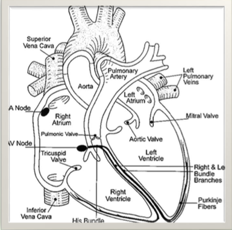

Knowing the anatomy and physiology of the heart is very important than just know how to identify different arrythmias.
- While cardiac pacemakers generally are controlled by inherent automaticity this can be altered by the sympathetic and parasympathetic nervous systems
- The sympathetic nervous system (SNS) is the equivalent of “stepping on the gas.” SNS signals decreases the level of automaticity which increases heart rate and tissue recovery speed, at the micro-anatomy level it increases the speed of muscular contraction which increases stroke volume
- The parasympathetic nervous system (PNS) is the equivalent of “stepping on the brake,” PNS stimulation increases automaticity of the atrial tissues resulting in slowing of atrial pacemakers but does not affect ventricular tissues where ventricular recovery speed affects stroke volume
Conduction Pathway
-
Sinoatrial Node (SN) : primary pacemaker, begins most cardiac cycles – signal travels to ...
-
Atrioventricular Node (AV) : slows forward conduction to allow atria to complete contraction before the ventricular response, secondary pacemaker usually suppressed by faster rate of atrial pacemakers, signal passes along ...
-
Bundle of HIS dividing into Right & Left Bundle branches ending in Purkinje fibers, this complex represents the tertiary pacemaker usually suppressed by faster pacemakers located in superior cardiac tissue
-
Right & Left bundle braches transmits the signal through the myocardium of the ventricles
-
Purkinje fibers delivers the signal to the individual myocardial fibers

Cardiac Cycle
Each normal cardiac cycle has a series of waves labeled with letters of the alphabet P-T in basic telemetry.
- P wave: Atrial contraction
- PR segment represents AV slowing
- QRS Complex: Ventricular Contraction (a pulse when perfusion is present) the J point at the end of the S wave occurs where the direction of upward or downward travel in the QRS complex begins change to lateral movement
- T wave: Ventricular repolarization (ventricular recovery) which must occur prior to the next ventricular contraction